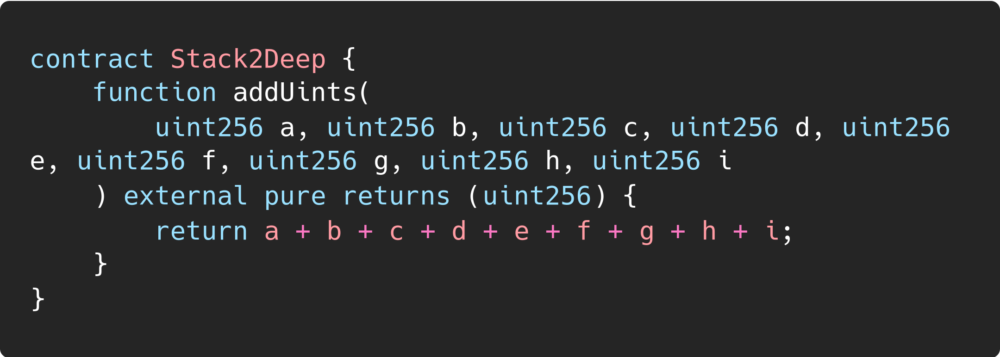
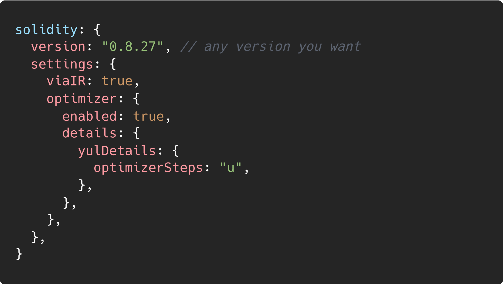
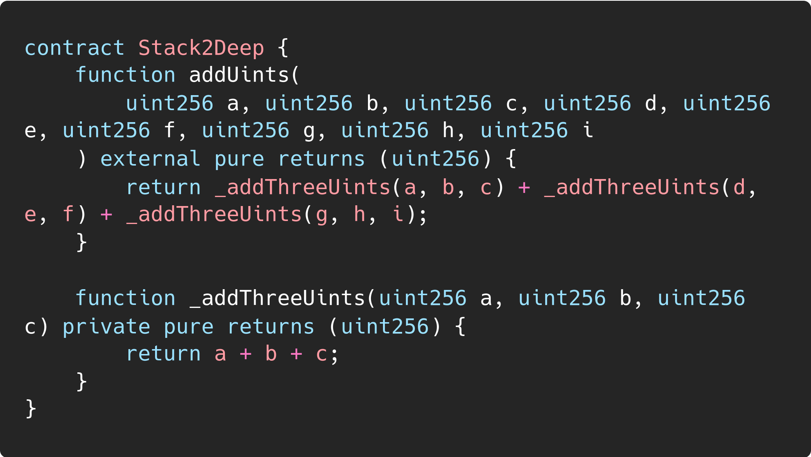
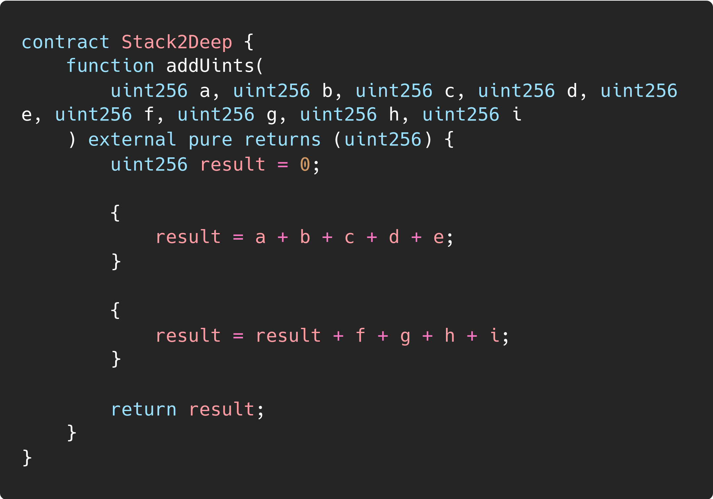
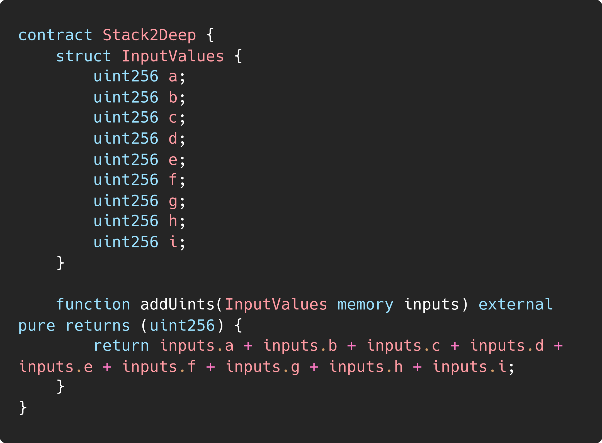

Stack Too Deep |
|
| Organization | DeepStack Software Pvt. Ltd. |
|---|---|
| Org URL | https://www.deepstacksoft.com |
Posted on: 2024-09-18
The EVM is a stack-based architecture, meaning most instructions pull
their arguments from the top of a stack, a special memory area used for
handling working data like local variables.
In Solidity, by default,
most function parameters and variables are stored on this stack and
manipulated during execution. The stack can hold up to 1024 values, each
32 bytes in size, but only the top 32 slots are directly accessible at
any given time. As a result, in more complex functions, the compiler may
run into errors if variables fall outside this easily accessible part of
the stack, causing compilation to fail. 
Newer versions of Solidity suggest compiling using –via-ir upon facing a stack too deep error. The IR codegen is capable of autonomously moving stack variables to memory to get around stack size limitations. This flag can be passed in many development tools like Hardhat and Foundry.

By batching 3 variables at a time using an internal function, you avoid the stack too deep error.

Block scoping lets you encapsulate logic, reducing stack usage and allowing the creation of new variables that are only relevant within the block.

Using structs, you can declare variables that live in memory instead of the stack. When using it this way, only a pointer needs to be stored on the stack, pointing to the memory offset of the struct, so several variables can be effectively collapsed into a single struct entry.
